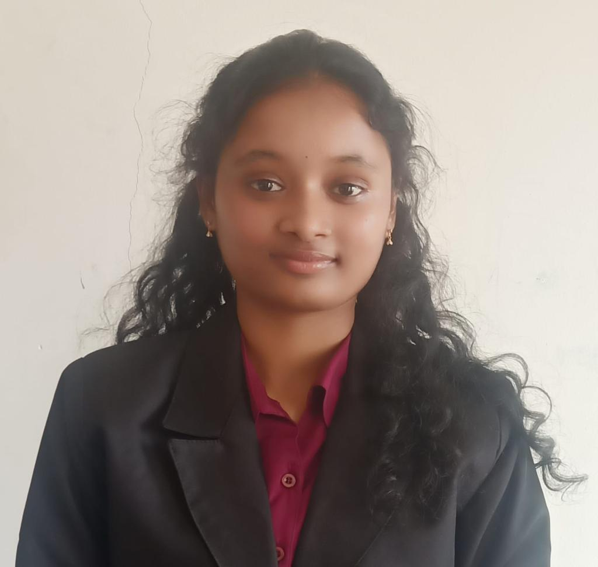

Contact
+91 9347120448
renukareddy.oladhri@gmail.com
H-No: 2-16, near grampanchayat, Yellapur, Hasanparthy, Dist-Warangal Urban, Telangana, 506371.
https://www.linkedin.com/in/renuka-oladri-8002b525b/
Specialization
Data Science and Artificial Intelligence
Languages
Technical Skills
- Python
- Data analysis
- Data visualization
- Machine learning
- Natural Language Processing
- SQL
- HTML
- CSS
- Javascript
Professional Skills
- Leadership
- Communication
- Teamwork
- Problem Solving
Awards
- Best Demonstration award - OIST National Level Hackathon
Hobbies
Co-Curricular Activities
- Volunteered for Naturopathy Medical Camp
Oladri Renuka
B.Tech - Data Science & Artificial Intelligence
Synopsis
I am a dedicated and results-driven individual with a strong background in Data Science and Artificial Intelligence. Seeking a challenging full-time position that allows me to leverage my communication skills, excellent time management, and problem-solving abilities. As an organized professional, I excel in managing multiple priorities with a positive attitude and a willingness to take on added responsibilities to meet team goals.
Academics
Woxsen University | Hyderabad, India
2021-2025 | B.Tech - Data Science and Artificial Intelligence
Grade- 3.52 CGPA
FIITJEE Junior College | Hyderabad, India
2019-2021 | Intermediate - MPC
Grade- 94.8%
Tejaswi High School | Hanamkonda, India
2019 | 10th grade
Grade- 10.0 CGPA
Work Experience
February 7, 2023 - July 21, 2023
Appstek Corp | Hitech city, Hyderabad
Research Intern
- Conducted in-depth research and contributed to the Context-Based Video Sentimental Analysis Project as a part of the Artificial Intelligence (AI) team.
- Successfully completed deep learning model training and prediction tasks, showcasing adaptability and quick learning.
- Collaborated in identifying and generating potential business leads, demonstrating a proactive approach to business development.
- Provided professional responses to clients' inquiries, demonstrating effective communication skills.
- Demonstrated innovation and dedication, earning recognition for hard work and commitment from the organization.
December 9, 2023 - January 8, 2024
Exposys Data Labs | Bengaluru
Internship in Data Science
- Build a machine learning model that predicts diabetes with 100% accuracy.
- Explored and experimented with nine distinct machine learning algorithms to ensure comprehensive coverage and best analysis.
- Collaborated in identifying and generating potential business leads, demonstrating a proactive approach to business development.
- Demonstrated a passion for the subject matter by actively engaging in the assigned tasks and showing an eagerness to learn
Certifications
- 2023-10 | Programming Foundations with Javascript, HTML and CSS
- 2023-10 | Social Media Analytics
- 2023-05 | Machine Learning with Python
- 2023-04 | Data Analysis with Python
- 2023-04 | Introduction to Data Engineering
- 2023-01 | AI & Development 2-day workshop on Data Science conducted by IIT Hyderabad.
Projects
Diabetes Prediction Model
- Technology skills: Machine Learning, Python, Data analysis, Data visualization
- Developed a predictive model for diabetes, showcasing proficiency in data analysis and machine learning.
- Collaborated with a team to gather and preprocess data, emphasizing effective teamwork and communication.
- Github: https://github.com/oladri-renuka/DiabetesPredictor.git
Weather Prediction Model
- Technology skills: Machine Learning, Python, Data analysis, Data visualization, Streamlit
- Led the development of a weather prediction model, leveraging data science and machine learning techniques.
- Utilized historical weather data to train and optimize the model for accurate forecasting.
- Demonstrated expertise in feature engineering and model evaluation, ensuring reliable predictions.
- Link: https://weatherprediction-5u6tmw49in6tdvtlwxjcgg.streamlit.app/